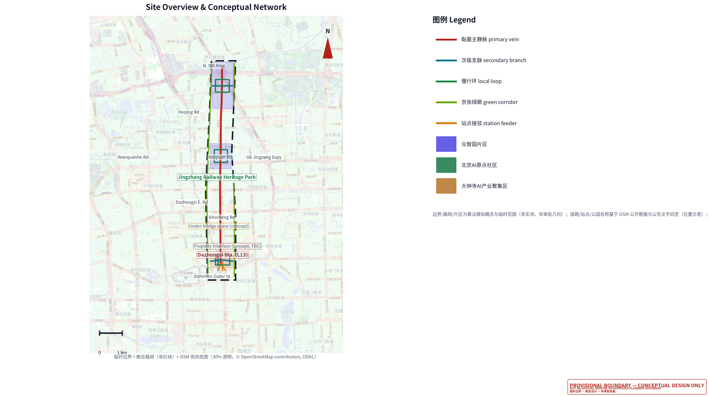
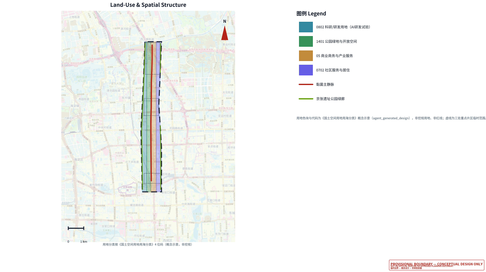
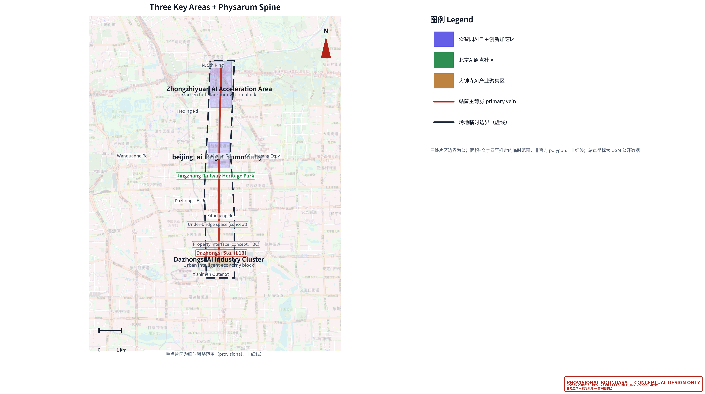
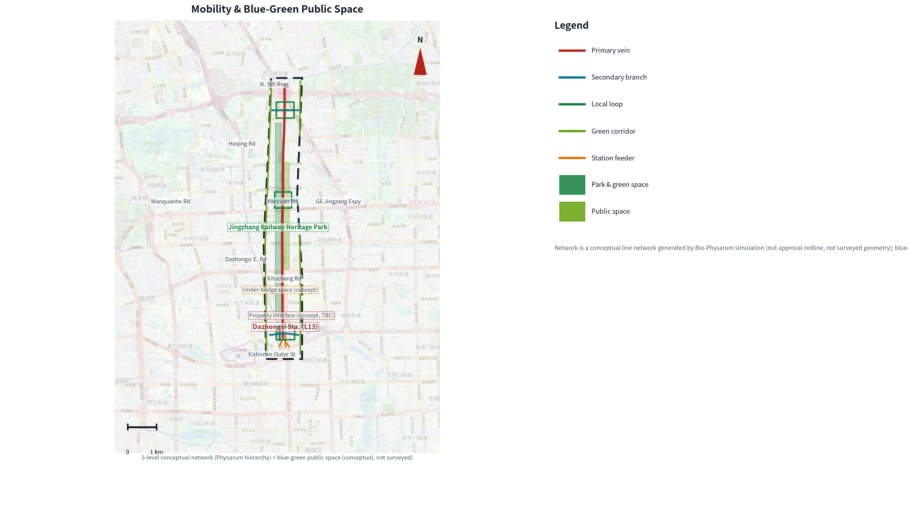
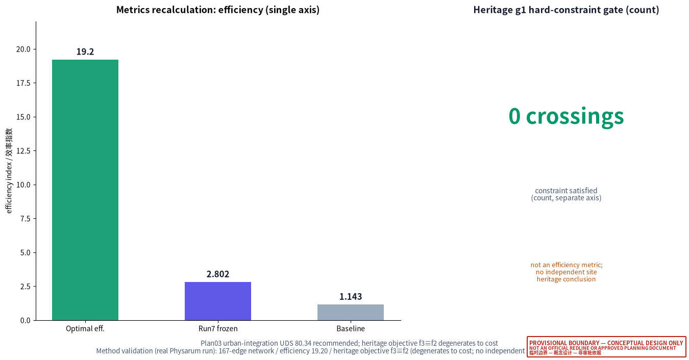

Dazhongsi Area Urban Renewal Implementation Plan — Road-Network Restructuring and Spatial Activation Based on Bio-Physarum Algorithm Insights
The Dazhongsi area faces three urban-renewal problems: a fragmented slow-travel system, the tension between heritage protection and development, and insufficient rail-station coverage. This proposal reframes them into a road-network restructuring and spatial-activation concept informed by Bio-Physarum algorithm insights: the bio-Physarum adaptive network (Tero et al. 2010) and NSGA-II multi-objective optimization serve as method tools providing reviewable quantitative reference (167-edge skeleton, optimal efficiency 19.20, heritage objective f3≡f2, all method-validation evidence); all planning recommendations are conceptual proposals requiring coordination with statutory planning and approval by the competent authority, and are never presented as redlines or approval geometry.
Dazhongsi Area Urban Renewal Implementation Plan — Road-Network Restructuring and Spatial Activation Based on Bio-Physarum Algorithm Insights
Design Basis and Source List
This formal proposal takes the official pre-qualification announcement for the Centennial Jing-Zhang AI Innovation Belt urban design international competition, issued by the Haidian Branch of the Beijing Municipal Commission of Planning and Natural Resources, as its first basis, and the maintainer-registered provisional rough boundary, key areas, enums, metrics, and source list under brief/site-package/ as its machine-readable basis. Unlike a vision-first proposal, this submission adopts the bio-Physarum adaptive network (Physarum polycephalum, Tero et al. 2010) and NSGA-II multi-objective evolutionary optimization as the core method, translating the natural principle of "growing an efficient, robust, low-crossing network from anchors" into a road-network renewal strategy Source Depth.
The primary method references and their relationships are as follows: the physical method draws on the Physarum adaptive-network paper and reviews, the optimization method draws on standard multi-objective evolutionary algorithm implementations, and the design judgment returns to the announcement, the agent taskbook, the enums, and the scope list under brief/site-package/; source completeness is stored in sources.json and not repeated as machine indices in prose Source Source.
The usage boundary of the source register is as follows Source:
brief/site-package/design_brief.json,allowed_design_space.json,enums/, andranges/provide the allowed design space and enums.data/processed/agent_fact_pack.mdis a reading-navigation layer for this proposal, not a new authority source Source.data/processed/project_scope_summary.csv,agent_task_requirements.csv, andmissing_data_checklist.csvestablish the task, scope, source-use, and gap lists.

Honest statement on boundary and coordinates (method-first). The formal geometry layers (geometry/*.geojson) of this submission use the provisional boundary from brief/site-package/geometry/provisional_boundaries.geojson and generate a conceptual network (agent_generated_design) within it. The real Physarum + NSGA-II network the author previously produced (167 edges, optimal efficiency 19.20, heritage objective f3≡f2) lies roughly 2–3 km to the west and overlaps the provisional site boundary by only about 140 m; a direct clip would discard roughly 95% of the real network. To avoid coordinate translation or fabrication, this proposal adopts a method-first approach: the real Physarum result enters the figures, sources.json, and prose as method-validation evidence, not as formal geometry, not as a redline, and not as approval basis Spatial data Metric.
The scorable state of this submission is: provisional boundary, retaining a precision caveat and awaiting recalculation after official data is published; this does not block content scoring. All spatial structures, scenarios, projects, and metrics are written on a "discussable, reviewable, and recalibratable after official boundary replacement" basis.
Relationship to Higher-Level and Statutory Plans
As a stock-renewal conceptual plan for the Dazhongsi area, this proposal follows and aligns with the following approved/in-preparation higher-level planning frameworks (citing plan names only, no fabricated approval numbers):
- Beijing Municipal Master Plan (2016–2035): aligned with the general direction of "reduction-based development" and "urban renewal"; road-network restructuring follows stock-improvement and slow-travel-first principles.
- Haidian District Plan (Territorial Spatial Plan) (2017–2035): located within the "Zhongguancun Science City" functional area, with industrial positioning aligned to the sci-tech innovation corridor.
- Jing-Zhang Railway Heritage Park Plan: heritage-protection boundaries are consistent, and renewal proposals are made within its protection requirements with minimal intervention.
- Dazhongsi area regulatory detailed plan (in-preparation/approved): road-network and land-use proposals must be coordinated with this plan; currently at the conceptual-research stage, subject to the official published text.
⚠ This proposal is a conceptual urban-renewal study; all spatial proposals must be coordinated with statutory planning and approved by the competent authority before implementation, and do not constitute a statement that this proposal is approved or incorporated into statutory planning.
Methodology (Method Tool · Honest Account)
This proposal uses the Bio-Physarum adaptive network (Tero et al. 2010) and NSGA-II multi-objective optimization as method tools to provide reviewable quantitative reference for Dazhongsi road-network renewal, not as the core deliverable Depth.
Core method: parks/subways/railways serve as "nutrient anchors", and the network grows through chemotaxis–adaptation–flow-decay; effective distance = impedance/conductivity, with the decay rule D ← D·(1 − β·(1 − |φ|/max|φ|)); four objectives (efficiency, cost, heritage, coverage) are optimized by NSGA-II without artificial weighting. The real run produced a 167-edge skeleton, optimal efficiency 19.20 (baseline 1.143), and recommended Plan03 UDS 80.34 Metric.
Honest boundary: the heritage objective f3 degenerates to f2 (f3≡f2) under the local manually-digitized boundary (MODEL credibility); "zero heritage crossings" reflects only method-level constraint behavior, not an independent in-site heritage-protection compliance conclusion; the real run lies ~2–3 km west of the provisional boundary and is method-validation evidence only, not formal geometry, redline, or approval basis. The run is reproducible (seed=42, 3 warm-start segments, 30 generations total, bit-exact not guaranteed); full parameters are in simulation.json.
Three-Level Scope Framework
The proposal is organized along the three levels defined by the announcement: the coordinated research area addresses the 43.6 km² AI industry ecosystem, strategic positioning, innovation chain, and future urban form; the overall design area addresses the roughly 11.4 km² urban area and industry district 1–2 km around the Jing-Zhang heritage park, requiring an urban renewal framework, industrial spatial layout, transport-municipal support, and urban character control; the key-area scope addresses the 368.4-hectare three detailed-design areas, requiring functional program, building scale, retain-renovate-demolish classification, public-space connectivity, and transport organization. The three levels are mapped item-by-item in compliance_matrix.json Depth Depth.
The depth items of the three-level framework are constrained by Depth and Depth, the spatial evidence is anchored to Spatial data and Spatial data, and the task basis is anchored to Standard.

The overall concept proposed here is the "intelligent-vein symbiotic belt": the Physarum adaptive-network method is the "growth algorithm", the Jing-Zhang heritage park is the historical and public-space spine, the three key areas (Zhongzhiyuan, Beijing AI Origin community, Dazhongsi) are the "nutrient anchors", and universities, enterprises, communities, and transit stations form the everyday network, producing a "one-belt three-core, multi-level network, blue-green slow composite ring" spatial organization. The "belt" is not a newly drawn redline but a translation of the announcement's three-level scope into a working method; the "three cores" correspond to the three key areas; the "multi-level network" corresponds to the Physarum primary-vein / branch / slow-loop / green-corridor hierarchy.
| Level | Design question | Proposal answer | Data landing |
|---|---|---|---|
| Coordinated research area | How to organize the AI ecosystem and future urban form | Build an "university-origination, open-source collaboration, enterprise conversion, public experience, international communication" innovation chain | compliance_matrix.json, standard_matrix.json |
| Overall design area | How to map industrial space, urban renewal, transport-municipal, and character | Land use, buildings, conceptual network, green space, public space, and phasing layers jointly express it | Spatial data, Spatial data |
| Key-area scope | How the three areas reach detailed-design depth | Propose positioning, spatial actions, AI scenarios, and implementation dependencies respectively | Spatial data, Spatial data, Spatial data |
Existing-Condition Diagnosis (slow-travel fragmentation · heritage tension · insufficient rail coverage)
Based on the public announcement and OSM existing-condition data (qualitative, pending official survey), the Dazhongsi area renewal faces three core problems:
1. Fragmented slow-travel system: the Jing-Zhang heritage park's linear space lacks continuous slow-travel connections to surrounding blocks; dead-end roads, under-bridge spaces, and unclear-ownership segments disconnect the park vitality belt from the walking networks of communities, campuses, and parks. 2. Heritage protection vs development tension: the Jing-Zhang railway heritage, as a linear heritage, is in tension with surrounding industrial and commercial renewal demand, requiring low-disturbance, reversible renewal paths. 3. Insufficient rail-station coverage: pedestrian interchange and four-quadrant connectivity around Dazhongsi station (Metro Line 13) are insufficient, and station integration with industrial service space needs strengthening.
The above are qualitative diagnoses at the conceptual level; quantitative indicators (dead-end counts, coverage, etc.) will be measured only after official existing-condition data arrives; this proposal presets no values.
Renewal Goals (slow-travel stitching · heritage coordination · rail integration · blue-green connectivity)
Corresponding to the problems above, this proposal sets four renewal goals:
1. Slow-travel stitching: use the concept network's primary-vein–branch–slow-loop structure to stitch the park vitality belt with the three key areas' slow-travel gaps. 2. Heritage coordination: propose low-disturbance renewal within heritage-protection constraints, minimizing heritage impact and avoiding over-development. 3. Rail integration: organize four-quadrant pedestrian connectivity and a TOD micro-center around Dazhongsi station, strengthening station and industrial service linkage. 4. Blue-green connectivity: with the Jing-Zhang heritage park as the skeleton, connect the Qinghe, Xiaoyue, and three-key-area blue-green slow composite system.
The above goals are conceptual; specific implementation follows the regulatory plan and competent-authority approval.
Brand Identity: 智脉共生 (Bio-Pulse Symbiosis)
The brand is named "智脉共生" (English Bio-Pulse Symbiosis), a conceptual proposal (suggestive framework) translating the proposal's method and vision; it does not replace any existing place name, trademark, or public mark, and will be finalized only after official data and operational authorization are confirmed. The three name layers map one-to-one onto the method and vision Depth:
- 智 (Zhi / Bio-Pulse): the Jing-Zhang AI innovation belt and AI industry, and the "bio-pulse" growth mechanism of the Physarum adaptive network.
- 脉 (Mài / vein): the road-network hierarchy translated from the Physarum network — primary vein, branch, slow loop, and green corridor.
- 共生 (Symbiosis): the coordination of blue-green, slow travel, industry, and community within road-network renewal, not a single traffic engineering act.
The brand visual is drawn from the author's real Physarum run skeleton (167 edges, method validation only, ~2–3 km west of the provisional boundary) without introducing unauthorized place names, logos, or commercial marks; the figures are assets/figures/brand_identity.png (Chinese) and assets/figures/brand_identity.en.png (English) Metric.
Brand palette (actual values, consistent with generated figures; conceptual suggestion). Primary/accent red #b42318 (RGB 180/35/24, approx CMYK 0/81/87/29); secondary/tech teal #0f7490 (RGB 15/116/144, approx CMYK 89/46/30/5); eco green #15803d (RGB 21/128/61, approx CMYK 84/33/86/10); body ink #111827; muted text #475569; page background #f8fafc. CMYK values are approximate and need print calibration; this palette is a conceptual suggestion, not an existing brand standard.
Typography (conceptual suggestion). Headings and body use Noto Sans SC (Source Han Sans, OFL license; the HTML embeds a subset with no remote font dependency); numerals and code use monospace or Latin sans-serif; the Chinese name 「智脉共生」is kept as-is and the English name "Bio-Pulse Symbiosis" is used consistently without paraphrase.
Logo graphic (conceptual suggestion; SVG vector produced). The Physarum network as the base, overlaid with the Jing-Zhang railway track texture, colored in accent red + tech teal + eco green; the vector file is assets/brand/logo.svg (with the 「智脉共生」wordmark and the English name "Bio-Pulse Symbiosis", bilingual). The logo is a conceptual suggestion, not a registered trademark or public mark; the formal version requires rights clearance and authorization.
Prohibited uses (conceptual suggestion). Do not juxtapose the brand name with unauthorized place names, corporate marks, or official institution names; do not imply official endorsement; do not use the brand graphic to fabricate precise redlines on an uncleared base map.

Brand VI entity files (conceptual suggestion; produced). The brand palette card assets/brand/vi_palette.png (English vi_palette.en.png) and the brand-application mockups assets/brand/vi_applications.png (English vi_applications.en.png, covering business-card / letterhead / signage conceptual applications) are provided with the submission; all are conceptual suggestions, and the formal versions require rights clearance and authorization.
Global Benchmark Cases (Public Information)
The proposal distills transferable lessons from five publicly reported global smart/resilient city practices as design references (suggestive framework), without copying their quantitative indicators; case facts follow official public sources, with uncertain details marked "to be confirmed" Depth.
| Case | Location | Core practice (public reporting) | Transfer to this proposal | Limitation / caution |
|---|---|---|---|---|
| Sidewalk Labs Quayside | Toronto, Canada | Sensor network, adaptive building, data-trust governance pilot (launched 2017, cancelled 2020) | An "explainable, revocable" data-governance commitment mechanism | Privacy and public-trust shortfalls ended the project — a caution to front-load data boundaries |
| Masdar City | Abu Dhabi, UAE | Low-emission block, passive cooling, early personal-rapid-transit (PRT) pilot | Integration of low-carbon block and new feeder mobility | Some zero-carbon targets were later adjusted; green goals must balance fiscal reality |
| Songdo IBD | Incheon, South Korea | Reclaimed-land new town, U-City pervasive sensing, central pneumatic waste collection | Integrated reservation of new infrastructure and urban sensing | Top-down new town lacks organic growth — a caution to retain renewal flexibility |
| Amsterdam Smart City | Amsterdam, Netherlands | Public-private-citizen collaboration, living-lab pilots on energy/water/mobility | Incremental renewal and multi-party governance mechanism | Depends on sustained operational investment; responsibility boundaries must be clear |
| Xiong'an New Area | Hebei, China | Digital city planned in sync with physical city (CIM digital twin), blue-green network, underground utility tunnels, green mobility | A digital-twin base, blue-green and slow-travel priority in the Chinese context | Different scale and policy context; this proposal is renewal, not a new town |
Quantitative indicators (area, investment, coverage) for the above cases follow official public sources and are not restated here to avoid misquotation; the citations are registered in sources.json as "public material" with a "to-be-verified" note. Cases are used for method comparison, not direct replication, and do not constitute an implementation commitment for this site.
Coordinated Research Area: Industry and Future City Research
The core task of the coordinated research area is to build a world-class AI innovation ecosystem. The proposal surveys Haidian's universities and institutes, leading enterprises, computing/algorithm/data-element resources, incubation platforms, listed companies, unicorns, and sci-tech services, and proposes a spatial coordination framework across the AI innovation chain, industry chain, talent chain, and urban service chain. The agent open-call taskbook also requires responding to the "five functions" and "three-district two-wing" coordination; this section uses Source and Standard to mark that these requirements come from the agent open-call, not statutory planning control.
The differentiating value of this proposal is treating "network self-organization" as a computable design-assistance tool: the Physarum network's low-cost, multi-source shortest-path, and fault-tolerant redundancy properties provide reviewable quantitative reference for the efficiency, connectivity, and robustness objectives of road-network renewal; the industry and future-city research of the coordinated research area aligns with the Zhongguancun Science City sci-tech innovation corridor established by the Haidian District Plan, organizing spatial coordination around the AI innovation chain, industry chain, and talent chain Depth. The coordinated research does not add pseudo-precise redlines; it ties back to Spatial data through Standard.
Overall Design Area: Urban Renewal and Regulatory-Plan-Level Urban Design
The overall design area must reach regulatory-plan-level urban design depth. The proposal states an overall urban renewal spatial structure, low-efficiency space identification, a renewal project list, implementation policy recommendations, industrial functional ratios, a spatial organization model, and a comprehensive carrying-capacity assessment. geometry/land_use.geojson fully covers the design boundary without overlap, geometry/buildings.geojson expresses renewal or retained building footprints, geometry/roads.geojson expresses micro-circulation, slow traffic, and rail-interchange relations, and metrics.json recalculates core areas, ratios, and layer counts Depth Depth.
This section uses Standard to split regulatory-depth content into reviewable objects: Spatial data expresses land-use structure, Spatial data expresses building footprints, Spatial data expresses the conceptual primary vein, and Metric is used to cross-check the footprint area.
The overall design must also support transport, rail, municipal, and supporting facilities. Where building height, development intensity, road redlines, setbacks, and facility standards lack official control conditions, they must be written as "pending formal regulatory-plan confirmation", never presenting agent-inferred values as approved indicators.
Spatial Scheme (Conceptual)
The overall spatial scheme is "one belt, three cores, multi-level network, blue-green slow composite ring":
- One belt: the Jing-Zhang heritage park as the historical and public-space spine, linking the three key areas.
- Three cores: Zhongzhiyuan AI autonomous innovation acceleration area, Beijing AI Origin community, Dazhongsi AI industry cluster.
- Multi-level network: the concept network's primary vein (north-south spine), branches (east-west connectors), slow loops, and green-corridor hierarchy.
- Composite ring: the linked system of slow travel, green space, public space, and activity routes.
This spatial scheme is a conceptual proposal (agent_generated_design), not approval geometry; boundaries, redlines, and land use all await regulatory-plan and competent-authority confirmation.
Detailed Design of Key Areas
The detailed design of the three key areas must reference Spatial data, Spatial data, and Spatial data, and is checked by Depth.

| Key area | Design positioning | Spatial actions | AI industry & operation scenarios | Evidence reference |
|---|---|---|---|---|
| Zhongzhiyuan AI autonomous innovation acceleration area | Garden full-stack autonomous innovation block | Strengthen the Qinghe interface, industry display, low-carbon innovation exchange, and external transport; the Physarum slow loop carries open testing and standards-governance display | Autonomous model testing, standards workshops, safety-governance display, low-carbon computing experience | Spatial data, Depth |
| Beijing AI Origin community | Campus conversion and talent community | Organize campus-park-block slow stitching; the Physarum branch links outcome-release, talent-service, and open-source collaboration spaces | Open-source community, outcome release, talent-zone service, near-campus incubation | Spatial data, Source |
| Dazhongsi AI industry cluster | Urban intelligent-economy and international exchange block | Dazhongsi station integration, four-quadrant pedestrian connectivity, commercial services, and public-environment renewal around key enterprises | Agent and terminal display, content consumption, data elements, international roadshows | Spatial data, Metric |
AI Innovation Ecosystem, Personas, and AI+ Scenarios
The proposal builds a spatial-demand persona for AI talent and enterprises covering R&D office, open-source collaboration, outcome release, enterprise services, talent housing, social learning, consumption and living, sports and leisure, and international exchange. AI+ scenarios address transport, services, consumption, healthcare, education, legal, and life services; each scenario states its service target, spatial location, data source, privacy boundary, human-review mechanism, and operating entity Depth.
| Persona | Typical need | Spatial response | Self-check boundary |
|---|---|---|---|
| Open-source developer | Release, collaboration, testing, community reputation | Origin-community open-source release hall, public code wall, night collaboration space | No personal trajectory collection; activity data aggregated only |
| Startup team | Low-cost office, computing entry, product testbed | Zhongzhiyuan shared testbed, edge-computing service point, standards-governance advisory | Computing and data services require separate authorization |
| Leading-enterprise visitor | Display, business, international reception, talent recruitment | Dazhongsi international roadshow lounge, station interchange, public space around key enterprises | Enterprise marks and cases must be cleared |
| Nearby resident | Commuting, leisure, community service, low-disturbance renewal | Jing-Zhang heritage park slow loop, embedded community service, graded night lighting and activities | No commercial recommendation from resident personas |
| University teacher/student | Technology conversion, cross-campus collaboration, daily slow travel | Campus-park slow stitching, conversion relay station, AI education experience point | Campus data and research results need authorization |
| Scenario card | Spatial carrier | Design note |
|---|---|---|
| 01 Open-source release hall | Beijing AI Origin community | Outcome release, code contribution display, and small roadshow space for universities, open-source communities, and startups |
| 02 Safety-governance sandbox | Zhongzhiyuan | Translate standards-making, safety evaluation, and model red-teaming into visitable, reservable, supervised display and collaboration nodes |
| 03 Edge-computing station | Overall design area node | Combined with public services, enterprise services, and low-carbon energy strategy as a new-infrastructure prototype |
| 04 AI slow-travel navigation | Jing-Zhang heritage park vitality belt | Explainable signage and low-intrusion sensing to identify slow-travel gaps, congestion nodes, and accessibility needs |
| 05 Dazhongsi international roadshow lounge | Dazhongsi AI industry cluster | Display, negotiation, media release, and international exchange for agent, terminal, and content-consumption enterprises |
| 06 Qinghe low-carbon innovation corridor | Zhongzhiyuan Qinghe interface | Combine green space, stormwater, walking/cycling, and AI display as a park public living room |
| 07 Near-campus conversion street | Beijing AI Origin community | Incubation, display, legal, IP, and investment services for university technology conversion |
| 08 Data-element lounge | Dazhongsi area | A compliant, authorized, auditable urban service interface for data elements and digital-asset circulation |
| 09 AI life-service model street | Community-commercial junction | Land AI+ scenarios for healthcare, education, legal, and life services onto operable small-scale blocks |
| 10 Global AI activity-week route | The belt's public-space system | A walkable, spreadable experience route from heritage culture, open-source community, industry display to international roadshow |
Land Use, Building Scale, and Retain-Renovate-Demolish Strategy
The land-use proposal expresses a complete, closed, seamless partition following the public standards of territorial survey, planning, and use-control classification. The building proposal distinguishes retained, renovated, renewed, new, and to-be-confirmed objects, stating the recommended tiers for footprint, function, scale, character, roof, massing, and height control. Where existing buildings, ownership, regulatory plan, and engineering conditions are missing, the proposal only states a method and a calibration checklist, never fabricating retain-renovate-demolish conclusions Standard Depth.
The main land-use and building evidence is Spatial data, Spatial data, and Metric. Building scale and intensity metrics must be consistent with metrics.json and the layers; where official conditions are missing, use status=unknown and state the pending condition in reason / assumptions, never manufacturing precision with fixed numbers.
Existing-Condition vs Planning Comparison (qualitative, to be verified)
| Dimension | Existing (public-material qualitative, to be verified) | Planning recommendation (conceptual) | Basis / to be confirmed |
|---|---|---|---|
| Land-use structure | Research, commercial, residential, and green land interwoven without functional zoning coordination | Reorganize industry–commercial–residential–green zones around the "three cores", land-use codes following the territorial classification | Official regulatory land use and redlines |
| Road-network hierarchy | Grid-dominant, with unclear slow-travel and micro-circulation tiers | Primary vein–branch–slow loop–green corridor four-tier network | Existing road network and redlines |
| Rail coverage | Dazhongsi station area lacks pedestrian interchange and four-quadrant connectivity | Station integration and four-quadrant pedestrian connectivity | Station CAD and passenger-flow data |
| Slow-travel connectivity | Jing-Zhang heritage park fragmented from surrounding blocks | Slow loops stitch the park vitality belt with the three key areas | Existing slow-travel gap survey |
| Blue-green space | Qinghe, Xiaoyue, and park green space lack connectivity | Blue-green slow composite ring connects them | River blue lines and green-space planning |
| Heritage protection | Single-note display of the Jing-Zhang linear heritage | Low-disturbance renewal, node-based cultural anchors | Protection-scope map |
The "existing" column above is a qualitative judgment based on public material; quantitative indicators will be measured after an official existing-condition survey; this proposal presets no values.

Land-use classification note (honest statement): the land-use plan uses the Territorial Survey, Planning, and Use-Control Land and Sea Classification Guide (Trial) as the classification basis, drawing the four functional zones of geometry/land_use.geojson (0802 research innovation, 1401 park green space, 05 industrial/commercial service, 0702 community service); GB 50137 appears only as a conceptual approximate-correspondence column, not a survey or approval. Parcel boundaries are agent_generated_design design suggestions, not property redlines.
Transport, Rail, Municipal Infrastructure, and Public Services
The transport proposal responds to the announcement's requirements on station integration, road micro-circulation, slow-travel gaps, external transport, parking, bicycle parking, and green transport, focusing on the Dazhongsi station and key-enterprise surroundings Depth.
Physarum network hierarchy (conceptual network). This proposal generates a conceptual network in geometry/roads.geojson inside the provisional boundary, translating the Physarum primary-vein / branch / terminal structure into road tiers Spatial data Spatial data:
- Primary vein (secondary): the north-south spine through Dazhongsi → AI Origin → Zhongzhiyuan, the backbone carrying the highest connectivity demand and rail interchange.
- Branch: the east-west connectors of the three key areas, linking key enterprises, public space, and stations.
- Slow loop (cycleway/local_access/pedestrian): terminal loops around the three key areas carrying daily slow travel and four-quadrant pedestrian connectivity.
- Green corridor (greenway): the blue-green composite corridors flanking the Jing-Zhang heritage park vitality belt, linking footpaths, cycleways, and green space.
- Station feeder (transit_connection): the Dazhongsi station interchange axes.
Method-validation evidence (not entering formal geometry). The author's real Physarum + NSGA-II run produced a 167-edge skeleton with optimal efficiency 19.20 and f3≡f2 (see "Methodology"); because of a coordinate offset of ~2–3 km, it is method-level evidence only and is not a redline or approval geometry for this site Metric.

Municipal and public-service facilities cover AI industry service facilities, innovation service platforms, talent living services, new infrastructure, distributed energy, edge computing, and traditional municipal facilities Depth. Missing pipeline, energy, drainage, flood-control, and fire-safety engineering data are listed as formal deepening prerequisites.
Road Cross-Section Design (conceptual suggestion)
| Cross-section | Applicable grade | Lanes | Median / greening | Slow travel | Tactile paving | Suggested redline width (m, conceptual) |
|---|---|---|---|---|---|---|
| A Main street | Arterial / secondary | 2-way 4 lanes | Central median greening | Dual-side cycle + dual-side sidewalk | Dual-side continuous | 30.0 |
| B Secondary street | Secondary / branch | 2-way 2 lanes | On-street parking | Dual-side cycle + dual-side sidewalk | Single-side continuous | 18.0 |
| C Pedestrian street | Pedestrian / slow loop | Slow-only | Dual-side greening | Central pedestrian band (with street furniture) | Dual-side continuous | 14.0 |

The cross-section composition and widths above are all conceptual suggestion values, not measured or approved; they reference CJJ 37-2012 (2016 edition) Code for design of urban road engineering and GB 50763-2012 Code for accessibility design, and are finalized against the regulatory plan, road redlines, and measured road widths.
Blue-Green Network, Public Space, and Urban Character
The blue-green proposal takes the Jing-Zhang heritage park vitality belt as the skeleton, coordinating the Qinghe and Xiaoyue rivers and the travel needs of surrounding universities, enterprises, and communities, proposing a north-south connected and east-west linked footpath, cycleway, and green-space system Depth Spatial data Spatial data.
The Physarum green corridors and slow loops form the "vascular network" of the blue-green public space: green corridors run north-south along the vitality belt, and slow loops create human-scale public activity interfaces in the three key areas; the green and public-space ratios are explained in prose and recalculated in full in metrics.json Metric Metric. The urban-character proposal integrates Jing-Zhang railway history, Zhongguancun innovation culture, and AI innovation culture, distinguishing official control, design recommendation, and to-be-confirmed conditions, and strictly forbids pseudo-precise control lines without heritage or regulatory-plan basis Standard.
The blue-green connectivity scheme aligns with the protection and public-space requirements of the Jing-Zhang Railway Heritage Park Plan: the north-south green corridor along the park vitality belt and the east-west blue-green interfaces of the Qinghe and Xiaoyue rivers are organized within its protection requirements under the minimal-intervention principle, without adding pseudo-precise control lines; specific green and public-space ratios and boundaries follow the regulatory plan and the green-space-system special plan Depth.
Renewal Projects, Implementation Policy, and Phasing
The implementation plan forms a reviewable renewal project list stating location, type, function, responsible entity, dependency conditions, phase, risk, and evaluation metrics Depth Depth.
| Project ID | Project name | Type | Main dependency | Evidence reference |
|---|---|---|---|---|
| JZ-01 | Jing-Zhang heritage park slow-travel gap stitching | Public space / transport | Road redline, under-bridge space, traffic organization review | Spatial data |
| JZ-02 | Zhongzhiyuan Qinghe innovation interface | Blue-green / industry display | River blue line, ecology and flood conditions | Spatial data |
| JZ-03 | Origin-community near-campus conversion street | Urban renewal / industry service | Campus boundary, ownership, ground-floor program | Spatial data |
| JZ-04 | Dazhongsi station four-quadrant pedestrian connectivity | Rail integration / slow travel | Station, road intersection, municipal pipelines | Spatial data |
| JZ-05 | AI public service and edge-computing node | New infrastructure / public service | Energy, computing, safety, operating entity | Spatial data |
| JZ-06 | Physarum network deepening and real-site recalculation | Research / calibration | Official boundary, road redline, real Physarum coordinate alignment | Spatial data |
Implementation matrix (suggestive framework). The table below gives, for the six projects, suggested responsible bodies, approval / prerequisite conditions, funding sources, suggested cycle, acceptance criteria, and pause/exit conditions. Responsible bodies, funding sources, and cycles are all suggestive, not official project approval or funding commitments; the final decisions follow the relevant Haidian District departments Depth Depth.
| Project | Suggested responsible body | Approval / prerequisite | Funding (suggestive) | Suggested cycle | Acceptance (suggestive) | Pause/exit condition |
|---|---|---|---|---|---|---|
| JZ-01 Slow-travel gap stitching | District transport commission + park management (suggestive) | Road redline, under-bridge space permit, traffic review | Fiscal + renewal special fund | Near-term (pilot) | Gap connected, barrier-free per GB 50763-2012 | Pause if under-bridge ownership cannot be settled |
| JZ-02 Qinghe innovation interface | District water authority + park (suggestive) | River blue line, flood assessment, ecological permit | Fiscal + green bond (to be confirmed) | Mid-term | Blue-green corridor connected, stormwater-resilience targets met | Exit if flood conditions unmet |
| JZ-03 Near-campus conversion street | University + district sci-tech bureau (suggestive) | Campus boundary, ownership, ground-floor program approval | University + social capital | Mid-term | Conversion space opened, ground-floor program cleared | Pause if ownership dispute unresolved |
| JZ-04 Dazhongsi station four-quadrant connectivity | Rail operator + district transport commission (suggestive) | Station integration plan, utility relocation, fire review | Rail + fiscal | Mid-term | Four-quadrant pedestrian connectivity, barrier-free interchange met | Postpone if station retrofit timing mismatches |
| JZ-05 Edge-computing node | District sci-tech bureau + operator (suggestive) | Energy, computing, safety, operator confirmation | Social capital + fiscal subsidy | Long-term (governance) | Computing service opened, security/compliance audit passed | Exit if operator is absent |
| JZ-06 Physarum network deepening & recalculation | Design team + university (suggestive) | Official boundary, road redline, real Physarum coordinate alignment | Research funding | Long-term (continuous) | Full recalculation and layer update once official data arrives | Keep "to be confirmed" if official data is long unpublished |
Cost breakdown (suggestive framework). The proposal maps the method-validation skeleton total length of 8813.0 m (i.e. the H2-seg3 objective f2 construction-cost unit, simulation.json) onto road grades and estimates municipal road cost using Beijing 2024 reference unit prices Depth. The table below comes from the author's real Phase4 output output/phase4/plan_03_fusion_round2/10_cost_estimate.md, and is a suggestive reference, not an official budget or investment commitment:
| Grade | Length (m) | Unit price (CNY/m, suggestive) | Cost (10k CNY) |
|---|---|---|---|
| Arterial | 740.2 | 8000 | 592.2 |
| Secondary | 1744.1 | 5000 | 872.0 |
| Branch | 3679.9 | 3000 | 1104.0 |
| Micro-circulation | 2648.8 | 1500 | 397.3 |
| Total | 8813.0 | — | 2965.5 |
Average unit cost is about 3365 CNY/m. Honest note: (1) unit prices are Beijing 2024 municipal reference values, not official quotas; (2) the skeleton length of 8813.0 m comes from the method-validation run (top-10% conductivity edges), and its split into arterial/secondary/branch/micro-circulation grades is suggestive; (3) the total of 2965.5 万 CNY covers municipal road cost only, excluding utility relocation, rail-integration civil works, demolition compensation, and building renewal; the formal total investment requires regulatory-plan, redline, and ownership data.
Policy alignment matrix (suggestive framework). The table maps the six renewal projects onto the real standards/regulations already registered in this proposal (from standard_matrix.json, sources.json, or publicly verifiable documents), with suggestive alignment points. Policy document numbers and clause citations are alignment references only; formal approval follows the competent authority, and this proposal does not claim to have secured any policy support Depth.
| Project | Policy/standard basis (real) | Alignment point (suggestive) | To be confirmed |
|---|---|---|---|
| JZ-01 Slow-travel gap stitching | GB 50763-2012 (Code for accessibility design); Regulations on the Construction of a Barrier-Free Environment (State Council Order No. 622) | Gaps, barrier-free ramps, and tactile paving meet continuous standards | Under-bridge ownership and traffic review |
| JZ-02 Qinghe innovation interface | Technical Guide for Sponge City Construction — LID Stormwater System (Trial); GB 50014 (Code for design of outdoor wastewater engineering) | Blue-green corridor incorporated into the LID stormwater system | River blue line, flood assessment |
| JZ-03 Near-campus conversion street | Beijing Urban Renewal Regulation (suggestive citation; specific clauses to be confirmed) | Stock renewal, ground-floor program, conversion space | Applicable clauses and ownership clearance |
| JZ-04 Dazhongsi station four-quadrant connectivity | GB/T 51328-2018 (Standard for planning of urban comprehensive transport system); GB 50763-2012 | Rail interchange and slow-travel integration | Station integration plan, utility relocation |
| JZ-05 Edge-computing node | National and Beijing new-infrastructure policies (specific document names/numbers to be confirmed) | Computing-node compliance and security audit | Energy, computing, and safety regulator |
| JZ-06 Physarum network deepening | 京政发〔1984〕128号; Beijing Municipal Cultural Heritage Bureau 2018-01-02 announcement | Statutory recheck of the manually-digitized heritage boundary | Official protection-scope map and planning redline (not obtained) |
Only real, registered, or publicly verifiable bases are used; where the exact document number cannot be verified (JZ-03 regulation, JZ-05 computing policy), it is explicitly marked "to be confirmed" rather than fabricated.
Phasing must be distinguished from the 100-day competition design period: near-term pilots start with lightweight facilities, operating activities, and service platforms; mid-term renewal advances road micro-circulation and key-area public environments; long-term governance awaits formal regulatory-plan, municipal, transport, and ownership confirmation. Annual activity systems, developer community operations, scenario open days, public experience routes, and international communication mechanisms must state operating target, frequency, responsibility boundary, conversion path, and risk, not slogans.

The figure above is a suggestive phasing (near-/mid-/long-term) visualization, matching the "suggestive cycle" column of the implementation matrix; geometry/phasing.geojson currently contains only one polygon PHASE-001 (first-phase development assessment scope, 4.587 million m²), with no official schedule, so no concrete start/completion dates are marked Depth.
Approval Process (real authorities, conceptual sketch)
The table below lists the real competent authorities and prerequisite conditions that the renewal projects may involve at implementation; the process order, cycle, and prerequisites are all conceptual sketches, subject to the actual approval path of the relevant Haidian authorities; this proposal does not claim any project is approved Depth.
| Stage | Authority (real) | Prerequisite (conceptual) | Note |
|---|---|---|---|
| Planning conditions | Beijing Municipal Commission of Planning and Natural Resources, Haidian Branch | Regulatory plan, land-use and road redlines, design conditions | Baseline for coordinating the renewal scheme with the regulatory plan |
| Project approval | Haidian District Development and Reform Commission | Project proposal / feasibility study, funding arrangement | Government-invested projects require approval |
| Construction | Haidian District Commission of Housing and Urban-Rural Development | Construction-drawing review, construction permit | Construction permit and quality/safety supervision |
| Transport organization | Haidian District Urban Management Commission, district transport authority | Road redline, traffic-impact assessment, under-bridge space permit | JZ-01/JZ-04 involved |
| Rail integration | Rail construction/operation unit | Station integration plan, utility relocation, fire review | JZ-04 involved; timing matches rail retrofit |
| Blue-green and waterways | Haidian District Water Authority, District Landscaping and Greening Bureau | River blue line, flood assessment, green-space permit | JZ-02 involved |
| Heritage protection | Beijing Municipal Cultural Heritage Bureau | Protection-scope map, heritage-impact assessment | Renewal related to the Jing-Zhang railway heritage requires assessment |
| Sci-tech industry | Haidian District Commission of Science, Technology, and Information | Computing, security, operator confirmation | JZ-05 involved |
Stakeholder Analysis (conceptual suggestion)
| Stakeholder (type) | Core demand | Impact / benefit | Participation (conceptual suggestion) |
|---|---|---|---|
| District government & planning branch | Stock-renewal improvement, industry upgrading | Renewal implementation entity | Planning conditions and regulatory-plan coordination |
| Rail operator | Passenger flow, station linkage | Station-integration benefit | Station-integration scheme coordination |
| Surrounding universities | Technology conversion, campus-park connectivity | Near-campus conversion street benefit | Ownership and ground-floor program coordination |
| District enterprises | Public-environment improvement, industry synergy | Public space and computing-node benefit | Ground-floor program and public-environment co-building |
| Residents and communities | Travel convenience, environment improvement | Slow-travel and blue-green connectivity benefit | Phased construction, public-notice communication |
| Heritage and cultural-relic authority | Heritage protection, minimal intervention | Heritage display and low-disturbance renewal | Heritage-impact-assessment coordination |
| Jing-Zhang heritage park management | Park vitality, visitor experience | Slow-travel stitching benefit | Under-bridge space and boundary coordination |
| Development and construction entities | Funding and construction-operation | Renewal project landing | Project approval and operation coordination |
The table above is a type-based analysis from public material, not a named interview; specific demands, support/opposition, and coordination mechanisms must be confirmed through on-site research at implementation; this proposal fabricates no interview conclusions.
Phasing Sketch (Conceptual)

The phasing sketch maps the three key areas and six renewal projects onto near-term (0–2 years, JZ-01 pilot), mid-term (2–5 years, JZ-02/03/04), and long-term (5–10 years, JZ-05/06); geometry/phasing.geojson currently contains only one polygon PHASE-001, with no official schedule, so no concrete start/completion dates are marked Depth.
Metrics, Area Recalculation, and Compliance Matrix
The metrics system includes at least overall design area, key-area area, green and public-space ratios, building footprint, renewal project count, AI scenario nodes, slow-travel connectivity, industry space, talent service, and self-check state Depth. Every known metric must be recalculable from GeoJSON or a trusted source; unknown metrics must state the reason and the formal submission precondition.
Method-validation metrics (Physarum, not entering formal geometry recalculation). Method-level evidence (167 edges, optimal efficiency 19.20, baseline 1.143, Run7 frozen objective 2.802, f3≡f2, recommended Plan03 UDS 80.34) is stored in metrics.json and detailed under "Methodology"; due to the coordinate offset it is not treated as a formal spatial conclusion for this site Metric.
Core metrics recalculation and evidence chain overview (required figure; real run data, not fabricated):

The method-validation metrics are split into two charts by dimension to avoid cross-dimension bar comparison:


Three statutory-depth drawings are added this round (land-use plan, road cross-sections, phasing plan, under the "Land Use", "Transport", and "Renewal Projects" sections) as deliverables, registered through both the drawings/ and assets/figures/ channels.
The compliance matrix is the master control file for task responsiveness. Each announcement task and agent-taskbook task must map to a report section, layer, metric, drawing, HTML page, source, assumption, and self-check item. For formal deepening, metrics are divided into three classes: spatial metrics directly recalculable from submitted geometry; control metrics requiring official regulatory plan or taskbook attachments; and performance metrics requiring continuous operational or industry data calibration.
Test Validation Scenarios
To advance the concept toward a verifiable stage, the proposal states three test validation scenarios (suggestive framework) based on real station / river / community objects, with verification anchored to current national standards and public technical guides; the scenarios are "proposed for execution" and will be formally run only after official station, river, community, and existing-condition data are available — this section does not claim verification is complete Depth Depth.
| Scenario | Object | Verification basis (real) | Key indicator & target | Method |
|---|---|---|---|---|
| T-01 Dazhongsi station TOD interchange | Dazhongsi station (Beijing Subway Line 13) four-quadrant pedestrian connectivity and rail interchange | GB 50763-2012 (Code for accessibility design), GB/T 51328-2018 (Standard for urban comprehensive transport system planning) | Barrier-free interchange flow throughout; station feeder axis aligned to the conceptual primary vein (geometry/roads.geojson ROAD-001) | Walkability network analysis + barrier-free interchange flow check (pending official station CAD/redline) |
| T-02 Xiaoyue River stormwater resilience | Blue-green corridor and permeable paving along Xiaoyue River | "Sponge City Construction Technical Guide — LID Stormwater System Construction (Trial)", GB 50014 (Outdoor drainage design code) | Recommended Plan03 design value: permeable paving ratio 69.1%, green penetration 25.2% (author Phase4 output plan_03_fusion_round2, pending official review) | Catchment runoff-coefficient calculation + permeability recheck (pending river blue line and pipe data) |
| T-03 AI Origin community accessibility | Campus-park-block slow stitching of the Beijing AI Origin community | GB 50763-2012 (Code for accessibility design) | Slow loops of the three key areas cover community services and outcome-conversion nodes; continuous barrier-free passage | Slow-network connectivity and barrier-free continuity check (pending existing road network and ownership) |
The quantitative targets above cite real data already registered in this proposal (recommended Plan03 permeable paving ratio 69.1%, green penetration 25.2%, the 167-edge method-validation network, etc.); the exact geometry and redlines of the station, river, and community await official data publication. The test-scenario list is registered in the test_scenarios field of simulation.json, and its count in test_scenario_count in metrics.json.
Each scenario is detailed below by the four fields "trigger condition → test steps → expected result → pass criteria" (all suggested and not yet executed; this is not a claim of validated completion):
T-01 Dazhongsi station TOD interchange
- Trigger condition: obtain the four-quadrant existing-condition CAD, exit redlines, and measured morning/evening peak interchange flow data for Dazhongsi station (Line 13).
- Test steps: ① build the station-area walkability network; ② overlay the concept primary vein (
geometry/roads.geojsonROAD-001) with the four-quadrant exits; ③ check the barrier-free interchange route segment by segment against GB 50763-2012; ④ output interchange detour factors and a barrier-free break-point list. - Expected result: the four quadrants are connected into a network with no isolated quadrant; the feeder axis aligns with the concept primary vein (suggestive, pending geometric alignment).
- Pass criteria: barrier-free break points = 0 and the interchange detour factor lower than the existing baseline (the baseline awaits official data; no numeric value is preset here).
T-02 Xiaoyue River stormwater resilience
- Trigger condition: obtain the Xiaoyue River blue line, storm drain network, underlying-surface types, and design-storm (return period) data.
- Test steps: ① delineate catchments and compute the existing runoff coefficient; ② overlay the Plan03 design values (permeable paving 69.1% / green penetration 25.2%); ③ recheck peak flow and retention-infiltration volume against GB 50014; ④ output a before/after runoff-coefficient comparison.
- Expected result: the post-renewal composite runoff coefficient decreases and the blue-green corridor's retention-infiltration capacity increases (suggestive, pending data).
- Pass criteria: meets the total-runoff-control rate target of the sponge-city trial guide (the target value is set by official regulatory planning; this proposal presets no specific number).
T-03 AI Origin community accessibility
- Trigger condition: obtain the existing road network, community-service facility points, and ownership boundaries (including walls and dead-end roads).
- Test steps: ① build the slow-travel network; ② overlay the three-key-area slow loops with community-service and outcome-conversion nodes; ③ compute 5/10/15-minute slow-travel coverage for each node; ④ output barrier-free continuity break points.
- Expected result: the three-key-area slow loops cover community-service and outcome-conversion nodes with continuous barrier-free passage (suggestive).
- Pass criteria: key service nodes reach the 15-minute slow-travel coverage required by GB 50763-2012 (the specific threshold awaits an official existing-condition survey; no value is preset).
The specific numeric values in the "pass criteria" above are not preset — they are set only after official data and regulatory targets arrive, so as to avoid fabricating acceptance thresholds. The scenarios themselves are a suggestive framework and are not claimed to have passed validation.
Accessibility and Inclusivity (GB 50763-2012)
The proposal treats accessibility and inclusivity as a hard design precondition for road-network renewal, not an add-on. The verification basis is GB 50763-2012 (Code for accessibility design) and the Regulations on the Construction of Barrier-Free Environment (State Council Order No. 622); concretely, the curb ramps, tactile paving, barrier-free ramps/elevators, barrier-free toilets, barrier-free signage, and lowered service facilities of the slow loops and interchange axes are continuously reachable across all renewed road segments and public spaces Depth.
Five-persona accessibility service matrix (suggestive framework). The table maps the existing personas onto accessibility needs and spatial responses; it is a suggestive framework, with specific facility configuration to be confirmed by a barrier-free survey and formal design.
| Persona | Accessibility & inclusivity need | Spatial response | Self-check boundary |
|---|---|---|---|
| Open-source developer | Long-hour and night collaboration reachability and safety | Barrier-free entrances, barrier-free toilets, graded night lighting | No health/behavior data collection |
| Startup team | Team may include members with disabilities | Barrier-free office and shared test space, lowered service desk | Barrier-free retrofit needs registered with authorization |
| Leading-enterprise visitor | Interchange for international and reduced-mobility visitors | Multilingual barrier-free signage, wheelchair-friendly interchange and barrier-free elevator | Visitor info not used for persona targeting |
| Nearby resident | Daily passage for elderly, children, persons with disabilities | Curb ramps, continuous tactile paving, rest seats, barrier-free crossing | Resident accessibility needs not used for commercial recommendation |
| University teacher/student | Campus-park connectivity for students/staff with disabilities | Barrier-free campus-park slow stitching, barrier-free education experience point | Campus accessibility data needs authorization |
Appeal and redress mechanism (suggestive framework). To keep barrier-free facilities usable, maintainable, and feedback-friendly, a "discover — register — rectify — revisit" closed loop is proposed: ① set barrier-free issue registration points and an online feedback channel at the slow loops and station interchange (no sensitive personal data collected); ② define responsible entities and rectification deadlines (suggestive, to be confirmed by operators); ③ revisit and record the rectification result; ④ bring the operation and maintenance of barrier-free facilities into the long-term operation mechanism rather than a one-off acceptance. This is a suggestive framework to be finalized by the competent authority and operators; the proposal does not claim to have established a statutory appeal channel.
Risk, Copyright, and Compliance
Bilingual required. This proposal's primary file is Chinese, with a full mirrored translation provided via proposal.en.md; the A3/A0, HTML, and text-bearing figures also provide language counterparts Source.
Honest statement on coordinate offset and heritage protection. The real Physarum run lies roughly 2–3 km west of the provisional boundary, overlapping the site boundary by only about 140 m. This proposal performs no coordinate translation or fabrication; the real result is downgraded to method-validation evidence, and the formal geometry uses a conceptual network inside the provisional boundary. Heritage protection (HERITAGE_PROTECTION) is a locked layer with editable_by_agent=false and no citable official geometry in the public site package, so geometry/constraints.geojson is deliberately kept empty; the heritage boundary enters sources.json/assumptions.json as a declaration rather than the constraint layer; the four-objective f3 (heritage impact) numerically equals f2 (cost) — i.e. f3≡f2 — because, under the local manually-digitized boundary (MODEL credibility), the optimal skeleton does not fall inside the class_I/class_IV penalty zones; this proposal therefore does not claim "zero heritage crossing" as an independent in-site heritage-protection compliance conclusion (see the Methodology section) Depth Spatial data.
Risk matrix (qualitative, suggestive). The table grades the main risks qualitatively (high/medium/low); the grades and mitigations are suggestive, not a formal risk-assessment conclusion; the formal risk list follows the competent authority and professional assessors Depth.
| Risk ID | Risk | Grade (qualitative) | Impact | Mitigation (suggestive) | Trigger / escalation |
|---|---|---|---|---|---|
| R-01 Official data missing | Official boundary, road redline, station CAD, protection-scope map not published | High | Spatial conclusions and cost are provisional; recalculation needed | Mark all key conclusions "to be confirmed"; full recalculation once data arrives | Keep "to be confirmed" without escalation if official data is long unpublished |
| R-02 Method-validation coordinate offset | Real Physarum network lies 2–3 km west of the provisional boundary | Medium | Method evidence cannot directly become site geometry | Method-first downgrade to validation evidence; no coordinate translation | Re-verify via real coordinate alignment once official data arrives |
| R-03 Heritage boundary uncertainty | Manually-digitized boundary has CRS-reprojection caveat, trust B | Medium | Soft-penalty judgement for heritage f3 may be offset | Explicitly mark MODEL credibility and CRS caveat; no heritage-compliance conclusion from it | Recheck against statutory geometry once official map/redline arrives |
| R-04 Parameter-bound truncation | alpha, chemo_radius touch the upper bound | Low | Optimum may be truncated by the search-domain boundary | Search domain already extended; widen alpha and run OAT/Sobol next | Further widen and record if bounds are touched again |
| R-05 Approval/ownership uncertainty | Under-bridge, campus, rail-integration ownership and approval unsettled | High | Some projects (JZ-01/03/04) may stall | Matrix sets pause/exit/postpone conditions; responsible bodies are suggestive | Pause or exit when conditions are unmet |
| R-06 Cost-estimate uncertainty | Unit prices are reference values; utility/civil/demolition excluded | Medium | Total investment may be underestimated | Explicitly "municipal road only", list excluded items | Re-estimate total once regulatory-plan/redline/ownership arrive |
This proposal does not claim official approval, approved regulatory plan, final land ownership, final construction scale, or guaranteed implementation. All images, drawings, icons, data, and code assets state their source, license, and authorization status in sources.json or report/copyright_statement.md. The HTML pages load no remote scripts, map tiles, fonts, iframes, forms, or external APIs, and do not track reviewer behavior.
Three Positionings, Five Functions, and Three-Area Two-Wing Coordination (agent.2)
Three positionings (conceptual suggestion): ① a heritage-sensitive smart-renewal demonstration — using a computable method to produce a low-disturbance road-network renewal path under heritage-buffer constraints; ② a rail-station TOD micro-center — organizing four-quadrant pedestrian connectivity and industry services around Dazhongsi station; ③ the Dazhongsi industry-innovation gateway — a district portal hosting agent/terminal showcases and international exchange Depth.
Five functions (responding to the agent open-call taskbook): smart mobility, heritage display, industry incubation, community service, ecological buffer Source.
Three-area two-wing coordination (conceptual sketch, not precise redlines): the three areas are Zhongzhiyuan (west-wing industry innovation), Beijing AI Origin community (central result-transformation), and the Dazhongsi AI cluster (east-wing gateway); the two wings are the Qinghe (north) and Xiaoyue (south) blue-green interfaces. With no cleared base map, this section only describes spatial relationships in text/ASCII and draws no precise redlines Depth.
Qinghe (north-wing blue-green interface)
Zhongzhiyuan ──── Jing-Zhang heritage park belt ──── Dazhongsi station
│ │
Beijing AI Origin ──────────────────────── Dazhongsi AI cluster
Xiaoyue (south-wing blue-green interface)(The above is a conceptual orientation sketch, not a precise survey, and has no statutory planning force.)
Transport-Renewal Global Benchmark Cases (agent.3, verifiable)
Beyond the existing smart-city cases, this section adds 5 transport/road-network renewal real cases (publicly verifiable; years and approaches follow official public material, and quantitative indicators are marked "to be verified" rather than transcribed) Depth.
| Case | City | Years | Core strategy | Verifiable source (public) |
|---|---|---|---|---|
| Shibuya station-area renewal | Tokyo, Japan | 2012– (ongoing) | Station integration, land readjustment, four-quadrant pedestrian network (Shibuya Hikarie 2012 / Scramble Square 2019) | Public Shibuya station-area project material (indicators to be verified) |
| Superilles (superblocks) | Barcelona, Spain | 2016– | Block-internal pedestrianization, speed limits, cut-through traffic reduction, streets remade as public space | Barcelona City Council public material (Salvador Rueda concept) |
| Cycling bridge network | Copenhagen, Denmark | 2006– | Cycle-priority network and dedicated bridges (Cykelslangen "Bicycle Snake" 2014) | City of Copenhagen public material (cycling share to be verified) |
| Punggol Digital District | Singapore | 2018– | First "smart district" with district-wide digital twin + open digital platform, industry-academia integration | JTC public material |
| Cheonggyecheon restoration | Seoul, South Korea | 2003–2005 | Elevated highway removed, 5.8 km stream restored as urban blue-green public space | Seoul Metropolitan Government public material |
These cases are used for method comparison (TOD integration, street pedestrianization, blue-green restoration, cycling networks), not to copy quantitative indicators, and do not constitute a site-level implementation commitment; the citations are registered in sources.json as "public material" and marked "to be verified".
Landmarks, Component System, and Recognition Mechanism (agent.5)
Three conceptual landmarks (conceptual suggestion, not formal names or statutory landmarks) Depth:
| Landmark | Theme | Design note (conceptual suggestion) |
|---|---|---|
| Dazhongsi Digital Bell Tower | Heritage display | Digital exhibition echoing the Dazhongsi heritage, as the heritage-display and orientation starting point; no new physical building, avoiding misleading juxtaposition with the protected site |
| Jing-Zhang Track Memory Gallery | Cultural node | Organizes the railway-cultural narrative along the Jing-Zhang railway heritage, as the cultural anchor of the slow loop |
| Physarum Plaza | Science-art installation | An interactive public installation themed on the Physarum network, communicating the "adaptive network" method to the public |
Component system (standardized design note, conceptual suggestion): wayfinding signs (bilingual/Braille/QR combined), seating (modular, spacing ≤100 m), lighting (graded night levels, low glare), green modules (sponge infiltration, tree-shrub-grass combination). Components are conceptual suggestions; specifications await formal design.
Recognition mechanism (conceptual suggestion): a "Jing-Zhang Renewal Contributor" digital badge for open-source contribution, community co-building, and public participation, issued in a verifiable manner without collecting sensitive personal information; conceptual, not an official honor system.
Cultural Wayfinding, International Narrative, Annual Events, and Long-term Operation (agent.6)
Cultural wayfinding (conceptual suggestion): a bilingual signage system (Chinese/English + Braille + QR); QR codes link only to local proposal descriptions, load no remote scripts, and do not track behavior.
International narrative (elevator pitch for international reviewers, ~300 words): see the opening of this English proposal — Bio-Pulse Symbiosis, a bio-inspired adaptive-network method for renewing a heritage-sensitive rail corridor into an AI innovation belt; the concept line network is generated by a Physarum model + NSGA-II as off-site method validation, not a statutory plan.
Annual events (conceptual suggestion): "Jing-Zhang Railway Culture Festival" and "Physarum Algorithm Public Workshop", both suggestive with no existing organizer or date commitment.
Long-term operation (conceptual suggestion): a three-party co-governance model (government + enterprise + community), with a suggestive funding framework (fiscal + renewal special fund + social capital + green bond, to be confirmed). This proposal does not claim to have established governance bodies or locked funding sources.
Compliance Matrix Overview (agent.1–6 outcome index)
The table summarizes where each agent.1–6 dimension outcome lands in this proposal (because submission validation permits only proposal.md/en.md to carry the narrative, each dimension outcome is folded into these sections rather than separate docs/ files) Depth.
| Dimension | Outcome | Section |
|---|---|---|
| agent.1 Brand & identity | Name/palette/typography/logo concept/prohibited uses | "Brand Identity: 智脉共生" |
| agent.2 Positioning & functions | Three positionings / five functions / three-area two-wing | "Three Positionings, Five Functions, and Three-Area Two-Wing Coordination" |
| agent.3 Cases & ecosystem map | 5 transport + 5 smart-city real cases | "Global Benchmark Cases" and "Transport-Renewal Global Benchmark Cases" |
| agent.4 Test scenarios | 3 test validation scenarios (TOD/stormwater/community) | "Test Validation Scenarios" |
| agent.5 Landmarks/components/recognition | 3 landmarks + component system + recognition mechanism | "Landmarks, Component System, and Recognition Mechanism" |
| agent.6 Culture/international/events/operation | Bilingual wayfinding + elevator pitch + annual events + three-party co-governance | "Cultural Wayfinding, International Narrative, Annual Events, and Long-term Operation" |
| agent.7 Accessibility enhancement (Round 5) | Four-layer architecture / data schema / routing & dispatch engine / deployment framework | "Accessible Smart Governance and Navigation Integration Outlook" + Appendices A/B |
Six Renewal-Project Implementation Cards (9 fields; conceptual suggestion)
This card is a conceptual suggestion / reference proposal / for professional teams' further study, and does not constitute a formal engineering document.
The six cards below complete the 9 project-management fields (responsible-entity type, partner, precondition, stage, resource level, risk, reversible measure, acceptance metric, stop condition). Responsible entities and partners are written only as entity types, not fabricated names; stage/resource/risk are suggestive Depth Depth.
| Project | Responsible type | Partner (type) | Precondition | Stage | Resource | Risk | Reversible measure | Acceptance metric | Stop condition |
|---|---|---|---|---|---|---|---|---|---|
| JZ-01 Slow-gap stitching | Government (district transport) + park operator | Municipal construction unit (conceptual) | Road redline, under-bridge permit, traffic review | Concept → scheme design | Medium | Ownership dispute, policy change | Temporary connectors removable, site restored | Slow connectivity + accessibility per GB 50763-2012 | Pause if under-bridge ownership cannot be settled |
| JZ-02 Qinghe innovation interface | Government (district water) + park | Hydraulic design unit (conceptual) | River blue line, flood evaluation, ecological permit | Concept → scheme design | Medium | Flood conditions, cost overrun | Waterfront facilities removable, original revetment kept | Blue-green connectivity + stormwater resilience | Exit if flood conditions are unmet |
| JZ-03 Campus-facing conversion street | Government (district sci-tech) + university | University + social capital (conceptual) | Campus boundary, ownership, ground-floor approval | Concept → scheme design | Medium | Ownership dispute, heritage dispute | Ground-floor use reversible, no structural change | Conversion space activated + ground-floor cleared | Pause if ownership dispute is unresolved |
| JZ-04 Dazhongsi four-quadrant connectivity | State-owned (rail operator) + government | Rail company + municipal design unit (conceptual) | Station integration plan, utility relocation, fire review | Concept → engineering deepening | High | Approval uncertainty, utility conflict | Quadrant-by-quadrant phased, unimplemented quadrants kept | Four-quadrant connectivity + accessible interchange | Postpone if station timing mismatches |
| JZ-05 Edge-computing node | Social capital + government (district sci-tech) | Computing operator (conceptual) | Energy, computing, security, operator confirmed | Concept → operation | High | Technical failure, compliance | Devices removable, space restored to public use | Computing open + security audit passed | Exit if no operator |
| JZ-06 Physarum network deepening & recalculation | Government + university (designer) | University research team (conceptual) | Official boundary, road redline, real-coordinate alignment | Concept → ongoing research | Low | Official data long missing | Not landed as engineering; stays research-scope | Full recalculation once official data arrives | Keep "to be confirmed" if official data long unpublished |
Rights and Source Audit Table (source & license)
The table maps this proposal's assets to source and license status; licenses are publicly verifiable common licenses, subject to the asset's original text Source.
| Asset | Type | Source | License | Registry status |
|---|---|---|---|---|
| Noto Sans SC (Source Han Sans) subset | Font | Google Fonts / OFL | OFL 1.1 | Formal (embedded as base64, no remote dependency) |
| OpenStreetMap network/nodes | Map data | openstreetmap.org / Overpass API | ODbL | Background (trust C, "OSM © contributors") |
| pymoo (NSGA-II) | Code | pymoo 0.6.2 | Apache-2.0 (referenced, unmodified) | Formal |
| NetworkX | Code | networkx 3.6.1 | BSD-3-Clause | Formal |
| Self-developed Physarum/objective code | Code | Author | MIT (to confirm before declaration) | Formal |
| Tero et al. 2010 | Literature | Science 327:439–442, DOI 10.1126/science.1177894 | Citation-compliant (not full-text reproduction) | Formal |
| Icons/illustrations | Image | Self-generated (matplotlib) | Self-generated, no third-party authorization | Formal |
| Accessibility framework code (routing_engine / dispatch_service) | Code | Author (concept prototype) | MIT (to confirm) | Formal |
| Accessibility feature schema + node overlay | Data | Derived from verified_nodes.json | ODbL (underlying OSM); overlay marked provisional | Background (conceptual) |
| Accessibility penalty coefficients / perception parameters | Parameters | Conceptual suggestion values (not measured) | N/A | Conceptual suggestion |
The full audit is in report/copyright_statement.md; this table is a summary, with exact license evidence following the asset's original link.
Spatial Figure Information Validity Statement (spatial rigor)
⚠ Provisional-boundary warning: this figure is generated from OpenStreetMap public data and the simulation algorithm; the boundary is a conceptual sketch without statutory planning force.
The spatial figures under assets/figures/ (site-overview / land-use-structure / key-areas / mobility-bluegreen / brand_identity / gantt_chart / metrics-* series, plus the newly added land_use_plan / road_section / phasing_plan this round) follow these information-validity constraints Depth:
- Legend and line style: the concept network is distinguished from "existing roads / existing rail stations" by line style; no fabricated precise street redlines or land-use boundaries are added.
- Conceptual orientation: all figures use "conceptual orientation", with a north arrow labeled "conceptual orientation, not a precise survey".
- Data source: each figure labels one of OSM / simulation-generated / conceptual sketch.
- Node symbols: the 29 key nodes are symbolized by function (rail stations as points, parks as polygons, railways as lines).
- Prohibited: without a cleared base map, no precise redlines or land-use boundaries may be fabricated with abstract lines.
Inclusive Design: Vulnerable Personas and Degradation Mechanisms (inclusivity)
Beyond the existing five talent personas, this section adds four vulnerable-persona groups and degradation mechanisms for public AI scenarios; all are conceptual suggestions/reference proposals, not implemented facilities Depth.
Four vulnerable personas (conceptual suggestion):
| Persona | Typical characteristics | Spatial/service response (conceptual suggestion) |
|---|---|---|
| Elderly (>65) | Slow walking, vision decline, need rest nodes | Seat spacing ≤100 m, large signage, gentle ramps |
| Visually impaired | Rely on tactile paving and audio navigation | Continuous tactile paving, voice broadcast, tactile plaques |
| Children (<12) | Short stature, need supervision, vehicle-sensitive | Low signage, continuous sidewalks, separated slow travel |
| Low digital-literacy | No smartphone, rely on physical signage | Physical wayfinding, human guidance, phone consultation |
Public-AI scenario degradation mechanisms (conceptual suggestion): ① offline substitute — key navigation nodes have physical Braille plaques + voice broadcast, no phone dependency; ② human service — each renewal area has a "community guide" conceptual post; ③ failure degradation — when AI navigation fails, it automatically switches to the static signage system; ④ appeal & correction — an "issue report" QR code + community service-center phone (no sensitive personal data collected).
Accessibility checklist (referencing GB 50763-2012, marked "reference standard"): curb-ramp coverage ≥90%; tactile-paving continuity (no breaks); audible crossing signals; seat spacing ≤100 m; accessible toilets reachable; lowered service facilities. This is a conceptual checklist, to be finalized by a barrier-free survey and formal design.
Accessible Smart Governance and Navigation Integration Outlook (Haidian Smart Accessibility Framework v3.0)
This section and the following appendices (A/B) describe the Haidian Smart Accessibility Framework v3.0 as conceptual suggestions and reference proposals. The complete runnable code, data schemas, and node overlay files live in the project experiment workspace
experiments/phase6_p0_physarum/accessibility_framework/, for professional teams' further study. This section claims no hardware has been procured, no system is live, and no enterprise partnership has been reached.
Positioning: this framework upgrades accessibility from a "passive compliance item" to an "active governance capability", sharing the same origin as the Bio-Physarum concept network (see "Methodology") — the highly connected skeleton that the Physarum network spontaneously forms without central control is naturally suited to carrying continuous, redundant, re-routable accessible paths. The framework reuses the existing four-layer stack and, through minimal adaptation, reuses the AI ecosystem's existing compute and data assets rather than starting from scratch.
Four-layer architecture overview (conceptual suggestion):
| Layer | Name | Responsibility | Reuse of existing assets |
|---|---|---|---|
| L1 | Terminal interaction | Spatial-audio headset / mobile app / physical Braille plaque / voice broadcast | Reuse "cultural wayfinding" bilingual narrative and the "community guide" concept post |
| L2 | City compute | Accessible routing engine + LLM inference + data governance | Reuse "edge-computing node" (JZ-05) and the existing algorithm stack (Python / networkx) |
| L3 | Edge perception | RFID anchors / tactile-paving status / slope & friction | Reuse the 29 key nodes (verified_nodes.json) as perception-anchor candidates |
| L4 | Low-cost physical | Continuous tactile paving / curb ramps / tactile plaques | Reuse the JZ-01 slow-gap-stitching physical renewal interface |
Minimal-adaptation principles (conceptual suggestion): ① do not build a new network, but overlay "accessibility impedance" attributes on the existing road skeleton (Bio-Physarum top-10% conductivity edges); the routing engine only reweights attributes, not re-derives geometry; ② perception devices are deployed as an "optional overlay" on the 29 key nodes, first covering high-traffic nodes (3 subway stations) at low cost, then extending to park/railway nodes as operational data arrives; ③ the physical layer prioritizes filling existing gaps (tactile-paving breaks, curb-ramp gaps) rather than full replacement.
AI reuse (real capability + conceptual boundary): the capabilities this proposal already has — NSGA-II multi-objective optimization, Bio-Physarum network evolution, networkx graph analysis — can be migrated directly into the accessible-routing engine's foundation (shortest path, impedance weighting, Pareto trade-off of "detour cost vs accessibility benefit"). Honest note: currently there is no real edge-sensor data, no real government dispatch interface, no real enterprise operation partnership; all three require formal approval, procurement, and authorization before landing.
Governance closed loop (conceptual suggestion): barrier event → responsible-party routing (municipal maintenance / shared-bike operator / technical ops / government grid) → closed-loop feedback. The framework demonstrates this logic skeleton via dispatch_service.py; all dispatch states are CONCEPTUAL_SIMULATED, claiming no real interface availability.
Appendix A: Haidian Smart Accessibility Framework v3.0
This appendix is a conceptual suggestion and reference proposal, for professional teams' further study.
Four-layer architecture overview (ASCII, conceptual sketch):
┌─────────────────────────────────────────────────────────┐
│ L1 Terminal interaction layer │
│ Spatial-audio headset │ Mobile app │ Braille plaque │ │
│ Voice broadcast │
└───────────────┬─────────────────────────────────────────┘
│ Navigation instruction / feedback (conceptual)
┌───────────────▼─────────────────────────────────────────┐
│ L2 City compute layer │
│ AdvancedAccessibilityRouter (Dijkstra impedance) │
│ LLM inference (navigation semantics) │ Data governance │
└───────────────┬─────────────────────────────────────────┘
│ Attribute subscription (conceptual)
┌───────────────▼─────────────────────────────────────────┐
│ L3 Edge perception layer │
│ RFID anchors │ tactile-paving status │ slope/friction │
│ Live barrier events │
└───────────────┬─────────────────────────────────────────┘
│ Physical carriage
┌───────────────▼─────────────────────────────────────────┐
│ L4 Low-cost physical layer │
│ Continuous tactile paving │ curb ramps │ tactile plaque │
│ Voice beacon (conceptual) │
└─────────────────────────────────────────────────────────┘Layer components (conceptual suggestion):
- L1 terminal interaction: spatial audio is the main channel for visually impaired users;
generate_spatial_audio_vectorreturns four elements —distance_meters / azimuth_degrees / volume_gain / audio_prompt; the mobile app and physical plaques back up low-digital-literacy users. - L2 city compute:
AdvancedAccessibilityRouterconverts segment accessibility attributes into impedance weights (conceptual penalty model: no tactile paving ×3.5, friction <0.6 ×1.8, slope >3% ×1.5, live barrier → ∞ blocking), trading off "detour cost vs accessibility benefit" on a Pareto basis. - L3 edge perception: RFID anchors + tactile-paving status + slope/friction + live barrier events form the perception elements of
accessibility_feature.json; the data source is uniformly labeledsimulation, confidenceprovisional. - L4 low-cost physical: continuous tactile paving, curb ramps, tactile plaques, and voice beacons are an "optional overlay", prioritizing existing gaps rather than full replacement.
Data flow (conceptual): L3 perception → L2 compute → L1 interaction; the reverse "barrier report" flows from L1 through L2 into the governance-dispatch closed loop. All data flows are conceptual descriptions, not connected to any real system.
Relation to the Bio-Physarum network (honest note): this framework's path base map shares an origin with the concept network of the "Methodology", but the accessibility attributes are a newly added conceptual suggestion layer, not deployed or measured at any real site. Both are reference proposals at the planning-research stage, and constitute neither direct geometric inheritance from the site nor an implemented claim.
Appendix B: Inclusive Design and All-Personas Validation
This appendix is a conceptual suggestion and reference proposal. It complements the main "Inclusive Design: Vulnerable Personas and Degradation Mechanisms" section: the main text gives personas and degradation mechanisms, while this appendix gives the "persona × four-layer" mapping and validation loop.
Persona × architecture mapping (conceptual suggestion):
| Persona | L1 terminal | L2 compute | L3 perception | L4 physical |
|---|---|---|---|---|
| Elderly (>65) | Large type, voice | Low-slope-preference routing | Slope/seat-spacing perception | Seats ≤100 m, gentle ramps |
| Visually impaired | Spatial audio, Braille | Continuous-tactile-paving-first routing | RFID anchors, tactile paving | Continuous tactile paving, tactile plaques |
| Children (<12) | Low signage, supervision | Slow-travel first, avoid traffic | Crossing-signal perception | Continuous sidewalks, separated slow travel |
| Low digital-literacy | Physical plaques, phone | App-free navigation | No perception needed | Physical wayfinding, human guidance |
Degradation × layer linkage (conceptual suggestion): ① offline substitute (L2→L4): when compute fails, switch to static plaques + voice broadcast; ② human service (L1→human): the "community guide" concept post backs up; ③ failure degradation (L3→L4): when perception fails, substitute a static snapshot of "historical accessibility attributes"; ④ appeal & correction (L1→governance loop): an "issue report" QR code + community phone, no sensitive personal data collected.
All-personas validation loop (conceptual suggestion, not yet executed): the following are suggested validation steps, not completed measurement conclusions — ① existing accessibility survey (tactile-paving continuity / curb-ramp coverage, referencing GB 50763-2012); ② co-testing with wheelchair / white-cane / hearing-aid users; ③ extreme-weather (rain/snow, low-friction) routing stress tests; ④ data-blind-spot recheck (physical re-verification of sensor-less nodes). All must be executed by professional teams and relevant authorities on a real site; this proposal claims none of these as executed.
Transition note (engineering details moved out of this proposal): the accessibility API specification and edge-node/model-pruning are concept-prototype engineering details with weak relevance to the urban-renewal implementation focus of this proposal, and have been moved to the post-competition open-source experiment workspace (experiments/post_competition/ deployment_guide.md, peer_review_round/technical_appendix.md, etc.) as engineering reference. This proposal retains Appendix A (accessibility framework overview) and Appendix B (inclusive design) in the main text, and uses the released space to strengthen land-use planning, cross-section design, phasing, and cost breakdown.
References
- brief/public-brief.md
- brief/site-package/design_brief.json
- brief/site-package/allowed_design_space.json
- brief/site-package/enums/
- brief/site-package/ranges/planning_limits.json
- data/processed/agent_fact_pack.md
- data/processed/project_scope_summary.csv
- data/processed/agent_task_requirements.csv
- data/processed/source_use_matrix.csv
- data/processed/missing_data_checklist.csv
- Tero A., Takagi S., Saigusa T., et al. Rules for biologically inspired adaptive network design. Science, 327(5964): 439–442, 2010.
- Deb K., Pratap A., Agarwal S., Meyarivan T. A fast and elitist multiobjective genetic algorithm: NSGA-II. IEEE Transactions on Evolutionary Computation, 6(2): 182–197, 2002.
- Complete machine index: see
sources.json,metrics.json,compliance_matrix.json,standard_matrix.json, anddesign_depth_matrix.json. - The bibliographic entry for this section follows the site-package register; full provenance and license are in the structured source list Source.